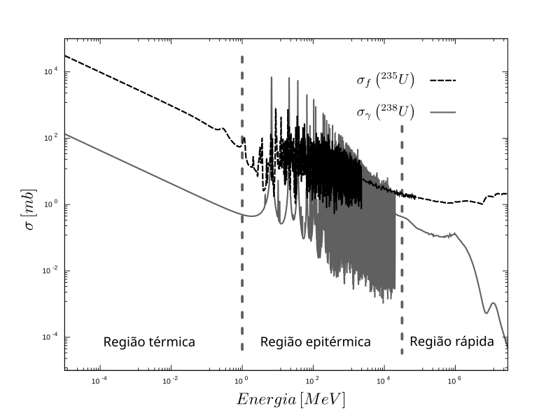
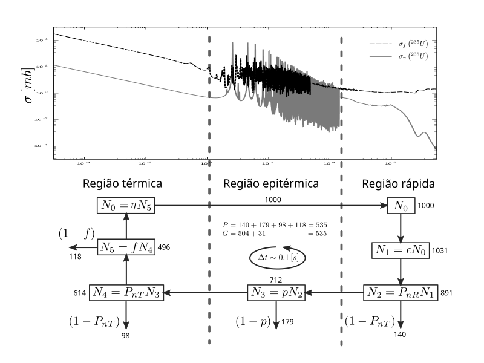

Para entender em quais faixas de valores o fator de multiplicação efetivo possa transitar, primeiramente note que, ao tratarmos de um reator para geração de potência, projetamos o sistema de forma que haja um excesso de reatividade1 característico. Isso é necessário para que possamos manter a reação em cadeia por longos períodos de tempo, pois, à medida que o urânio fissiona ou se transmuta, a quantidade de material físsil diminui (depleção) e surgem produtos de fissão que absorvem nêutrons (venenos). Desta forma, este excesso inicial é fundamental para equilibrar as perdas parasitas de reatividade induzidas ao longo da operação. Em geral, o excesso estabelecido determina o ciclo de vida operacional do combustível no reator.
Outro ponto importante reside no fato de que cada reator é projetado de forma específica quanto ao seu espectro de nêutrons. Alguns reatores, chamados de reatores rápidos, são projetados para que a maioria dos nêutrons do sistema esteja dentro do espectro de alta energia (energia cinética entre centenas de keV a alguns MeV). Estruturalmente, evitamos nestes reatores o uso de materiais que moderem o espectro por espalhamentos elásticos eficientes — por exemplo, não utilizaríamos água como refrigerante. Uma boa escolha de refrigerante seriam materiais de maior número de massa atômica, como metais líquidos (sódio, chumbo) ou gases (hélio, CO). Evidentemente, o espectro dos reatores rápidos acaba sendo “suavizado” (softened) pelo próprio combustível e materiais estruturais via espalhamentos inelásticos e elásticos, levando a uma distribuição energética que se estende por cerca de uma ordem de grandeza. Reatores deste tipo geralmente necessitam de maior enriquecimento para compensar a menor seção de choque de fissão em altas energias.
O outro tipo principal são os reatores térmicos. Neste caso, desejamos propositalmente moderar o espectro de energia para aproveitar o aumento substancial das seções de choque de fissão nas regiões de baixa energia (térmica). Nestes sistemas, a utilização da água como refrigerante e moderador é comum, porém, devido à taxa de absorção não desprezível do hidrogênio, pode ser necessário um enriquecimento do combustível (tipicamente na faixa de 3 a 5% para LWRs).
Os reatores térmicos são a base da indústria nuclear atual e operam essencialmente com nêutrons termalizados — região onde as velocidades relativas dos nêutrons giram em torno de , onde é a constante de Boltzmann e a temperatura do meio. Nesse contexto surgem as fórmulas de fatores, que são uma forma elegante de dividir os diversos fenômenos complexos presentes no ciclo de vida do nêutron, possibilitando o entendimento separado de cada processo físico.
A fórmula dos seis fatores relaciona o fator de multiplicação efetivo () com seis parâmetros distintos, los quais representam fenômenos cruciais no balanço neutrônico de reatores térmicos2:
Onde:
- : Fator de reprodução térmica (número médio de nêutrons de fissão emitidos por nêutron térmico absorvido no combustível).
- : Fator de utilização térmica.
- : Probabilidade de escape da ressonância.
- : Fator de fissão rápida.
- : Probabilidade de não escape de nêutrons rápidos (fuga rápida).
- : Probabilidade de não escape de nêutrons térmicos (fuga térmica).
Antes de detalhar os significados de cada fator, vamos caracterizar a composição do combustível e o espectro de nêutrons. Supondo um reator usual a urânio, considere as seções de choque microscópicas de fissão do e de captura do — as principais interações no combustível. A Figura 1 ilustra essas seções de choque em função da energia, onde identificamos as regiões rápida, epitérmica (ressonâncias) e térmica.

Figura 1: Seções de choque microscópicas de fissão para e captura para em função da energia do nêutron incidente.
Notem no gráfico que as capturas no concorrem com a fissão ao longo de todo o espectro, superando-a pontualmente (e drasticamente) nas ressonâncias da região epitérmica. À primeira vista, pode parecer que, em média, isso não seria um problema crítico. Porém, não podemos esquecer que nestes reatores o enriquecimento é baixo (a maior parte do combustível é ). Isso implica que as seções de choque macroscópicas de captura do são cerca de duas ordens de grandeza maiores que o valor microscópico relativo sugeriria, resultando em uma concorrência significativa, especialmente na região de ressonância.
Neste cenário, quando um nêutron inicia um processo de fissão, os nêutrons emitidos são rápidos (energias médias de 2 MeV). Nesta faixa, a seção de choque de fissão é da ordem de 1 barn. Reatores térmicos buscam levar esses nêutrons para a região térmica, onde a probabilidade de fissão aumenta consideravelmente (centenas de barns), superando a absorção dos demais materiais. Para isso, utilizamos um moderador — material com boa seção de choque de espalhamento e baixa absorção3. O espalhamento é o processo que reduz a energia cinética dos nêutrons rápidos até o equilíbrio térmico.
Com estes conceitos em mente, vamos definir cada um dos fatores:
O parâmetro (Fator de Reprodução Térmica)
É o número médio de nêutrons de fissão emitidos por nêutron térmico absorvido no material combustível. É escrito como:
onde e são as seções de choque macroscópicas de fissão e absorção do combustível, respectivamente, e é o número médio de nêutrons por fissão. Note que inclui a fissão e a captura estéril em todos os isótopos do combustível (, , etc.). Este valor mede a capacidade intrínseca do combustível de multiplicar nêutrons na região térmica.
O parâmetro (Fator de Utilização Térmica)
É a razão entre a taxa de absorção de nêutrons térmicos no combustível e a taxa de absorção de nêutrons térmicos em todo o reator (incluindo moderador, refrigerante, estruturas, etc.):
Este fator mede a eficiência do arranjo do reator em garantir que os nêutrons térmicos sejam absorvidos onde desejamos (no combustível) e não “desperdiçados” em outros materiais.
O parâmetro (Probabilidade de Escape da Ressonância)
É a probabilidade de que um nêutron, ao ser moderado desde a região rápida até a térmica, não seja capturado pelas ressonâncias de absorção do na região epitérmica.
O parâmetro (Fator de Fissão Rápida)
Contabiliza as fissões que ocorrem enquanto os nêutrons ainda são rápidos (principalmente no , que fissiona apenas com nêutrons de alta energia). É definido como a razão entre o número total de nêutrons de fissão produzidos (por fissões rápidas e térmicas) e o número de nêutrons produzidos apenas pelas fissões térmicas. É um valor ligeiramente maior que 1 (tipicamente 1.03 a 1.05 em LWRs).
Os parâmetros e (Probabilidades de Não Escape)
- : Probabilidade de um nêutron rápido não escapar (vazar) do sistema enquanto desacelera.
- : Probabilidade de um nêutron térmico não escapar do sistema enquanto se difunde antes de ser absorvido.
Estes parâmetros dependem intrinsecamente da geometria e do tamanho do reator (relação superfície/volume).
O Ciclo de Vida do Nêutron
Todos estes parâmetros podem ser conectados para descrever o ciclo de vida médio de um nêutron. Vamos considerar, como exemplo, os parâmetros da Tabela 1. A Figura 2 esquematiza o processo de balanço.
Tabela 1: Valores típicos dos parâmetros da fórmula de 6 fatores para exemplificação.
| Fator | Símbolo | Valor |
|---|---|---|
| Fator de reprodução | 2,02 | |
| Fator de utilização térmica | 0,799 | |
| Probabilidade de escape de ressonância | 0,800 | |
| Fator de fissão rápida | 1,04 | |
| Probabilidade de não escape rápido | 0,865 | |
| Probabilidade de não escape térmico | 0,861 |

Figura 2: Processo de balanço para um reator térmico via fórmula de seis fatores.
Suponha que iniciamos o ciclo com nêutrons de fissão originais (térmicos).
- Fissão Rápida: Antes de serem moderados, alguns nêutrons causam fissão rápida no . O fator aumenta a população: nêutrons rápidos.
- Fuga Rápida: Durante a moderação, alguns nêutrons vazam. A fração que permanece é : nêutrons iniciam a termalização.
- Captura de Ressonância: Ao passar pela região epitérmica, alguns são capturados pelo . A fração que escapa é : nêutrons chegam à região térmica.
- Fuga Térmica: Já termalizados, alguns nêutrons vazam antes de serem absorvidos. A fração que permanece é : nêutrons absorvidos no sistema.
- Utilização Térmica: Desses absorvidos, apenas uma fração ocorre no combustível. O fator determina isso: nêutrons absorvidos no combustível.
- Reprodução: Finalmente, cada nêutron absorvido no combustível gera novos nêutrons rápidos de fissão: novos nêutrons.
Ao final do ciclo, recuperamos os 1000 nêutrons iniciais. O fator de multiplicação efetivo é a razão entre a população final e a inicial:
Note que existe um equilíbrio exato entre o número de nêutrons perdidos (por fuga e captura estéril) e os adicionados por fissão.
A fórmula de seis fatores é uma maneira poderosa de separar os efeitos físicos. É comum na literatura definir o fator de multiplicação infinito (), que abstrai as perdas geométricas (assumindo ):
Assim, podemos escrever .
Vale ressaltar que para reatores rápidos, esta formulação deve ser adaptada, pois a distinção clara entre “rápido”, “epitérmico” e “térmico” (e a função do moderador) não se aplica da mesma maneira. No entanto, o conceito de balanço de taxas de reação permanece universal.
Agora, vamos voltar para a equação de difusão e tratar várias formas geométricas distintas, analisando como expressamos o parâmetro de multiplicação efetivo em cada caso.
← Anterior | Home | Próximo →
Footnotes
-
Quando falamos em “excesso de reatividade”, entenda-se como um valor inicial de (supercrítico) que é compensado por mecanismos de controle (barras, venenos) para manter o reator crítico () durante a operação. O “excesso” refere-se à capacidade potencial do combustível novo. ↩
-
Tenha em mente que esta fórmula é específica para a física de reatores térmicos e pode necessitar de reformulações para outros espectros. ↩
-
Escolhas óbvias para moderadores são materiais leves, pois absorvem mais energia por colisão (máxima transferência de momento). Exemplos: (em ), (em ), (grafite) e . ↩